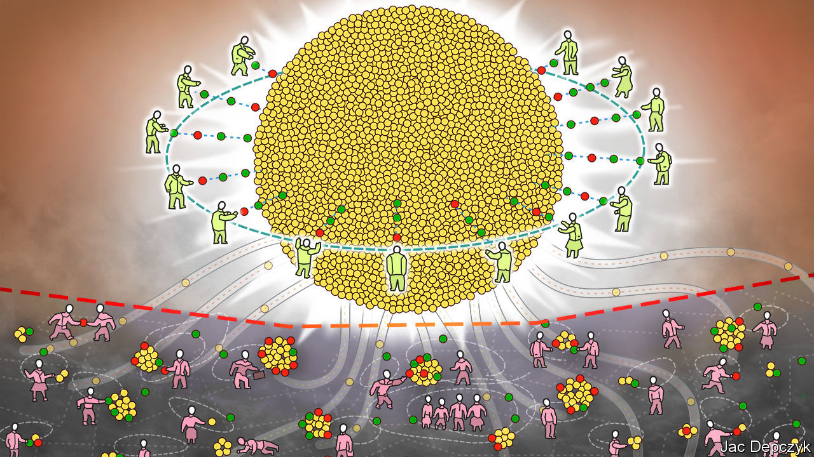
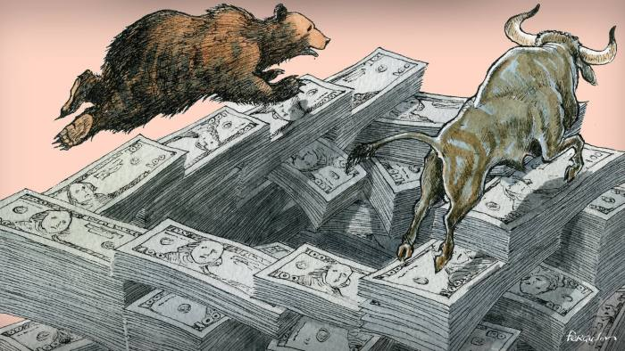
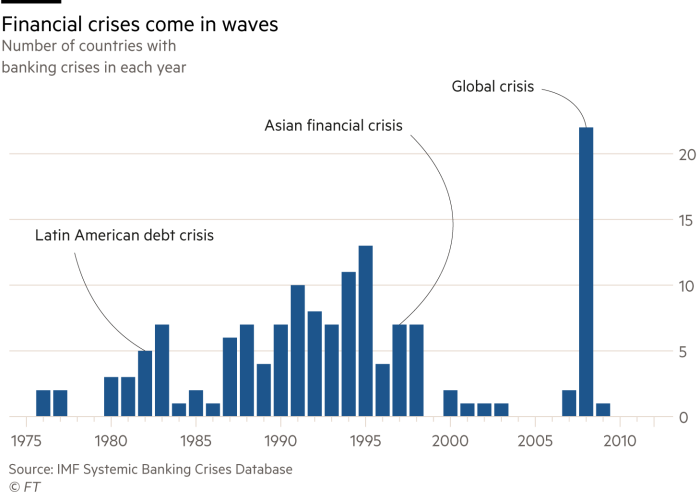
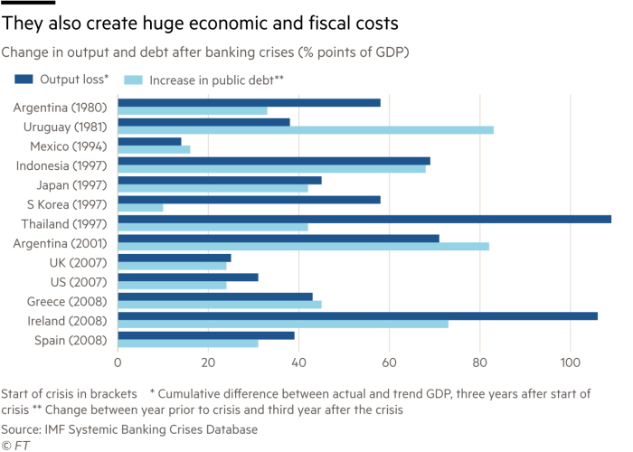
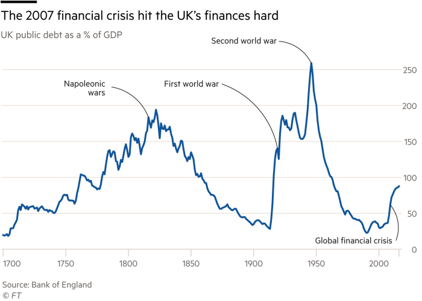

I've previously commented more than once on the relatively more healthy state of economic debate in the UK than here – which is not to say that the giant intellectual sucking sound that is Brexit isn't already having its own disastrous impact on debate.
Meanwhile two of my favourite British commentators have taken up ideas that are close to my heart. The Economist, proposing accounts at the central bank for all and Martin Wolf urging the Swiss to vote "Yes" to sovereign money tomorrow (polls suggest they won't) and raising my proposal of allowing citizens to both park savings with the central bank and to borrow against super safe mortgages.
I reproduce each below the fold.
Central banks should consider offering accounts to everyone
From The Economist: Individual accounts could improve consumer welfare and macroeconomic policy

A RECESSION strikes. Central banks leap into action, cutting interest rates to perk up investment. But what if, as now, there is not much cutting to do, with rates already at or close to zero? In such cases the manual calls for purchases of government bonds with newly printed cash—quantitative easing, or QE—swelling the reserves each bank keeps at the central bank. Imagine instead that people also kept accounts at the central bank. New money could be added to their accounts, providing a direct, equitable boost to spending. That is one of several potential benefits of individual central-bank accounts, which are among the more intriguing of the radical policy ideas in circulation. Central banks deal in two sorts of currency: cash, which anyone can hold, and digital money, accessible only to financial institutions through their accounts at the central bank. Individuals hoping to spend digital money must use a bank card or transfer (or a service, like Apple Pay, linked to a bank account), or a private crypto-currency such as bitcoin or Ethereum. Some central banks are considering whether and how to expand the use of their own digital money. Sweden’s Riksbank, for example, is exploring ways to create a widely used e-krona. In June Swiss voters will participate in a referendum on a radical monetary reform, one effect of which would be to give individuals access to digital money at the Swiss National Bank (SNB). The main difficulty central banks face is how to facilitate the circulation of digital currency without routing everything through banks, as happens today. Blockchain technology, which underpins crypto-currencies, could be one way to avoid the banks. In such systems balances and transactions are tracked on a distributed public ledger, secured with cryptography. But central banks worry about security risks and technical challenges. And as Aleksander Berentsen and Fabian Schar write in the latest quarterly Review of the Federal Reserve Bank of St Louis, central-bank backing for anonymised transactions would be awkward when private banks face demands to crack down on money-laundering and tax evasion. Easier and less risky would be to extend the privilege enjoyed by banks, to hold digital money at the central bank, to everyone. Why, though, would central banks want to do so? One answer is that individual accounts could help them with their monetary-policy mission. At present, they manage interest rates across the economy indirectly, by adjusting the rates banks earn on their reserves. But these are passed on only imperfectly to consumers. At the moment, banks in America can earn a short-run, risk-free interest rate of about 1.75% (those in Europe and Japan earn less). Current accounts at private banks, meanwhile, pay approximately nothing. In a world of individual central-bank accounts, in contrast, the rate paid on individual deposits would become a potent policy tool. Rate changes would have a direct, transparent effect on depositors. And were central-bank digital money to account for a big share of transactions, swings in such spending could become a useful real-time source of data for policymakers. The accounts would come in especially handy when near-zero interest rates leave central banks with few good options in a crunch. The effects of QE diminish over time, particularly when crisis-induced breakdowns in credit markets begin to heal. Central bankers could be more confident in the stimulative effect of what Milton Friedman termed “helicopter money”: distributions to the public of newly minted dosh. These would bring complications. Money is commonly considered a liability of a central bank. Accountants would frown at distributing new money without obtaining assets in exchange (like the government bonds purchased when banks carry out QE), since they would create a huge negative position on central-bank balance-sheets. But an institution that can create its own money cannot go bankrupt. As long as a central bank is keeping to a policy target (like a 2% inflation rate) an ugly balance-sheet is not a problem. Crucially, monetary policy oriented around individuals should be easier to understand than the customary prestidigitation. Political constraints on the use of QE—the perception that it is a giveaway to banks, or (in Europe) a way to prop up fiscally incontinent governments—might bind less tightly for injections of money into individual accounts. A “public option” for banking ought to improve private banks’ behaviour, too. To keep their deposits, they would need to offer useful services and competitive rates, rather than hidden fees. Guaranteed access to a simple, interest-paying savings vehicle, and to electronic money, could be a boon for the world’s underbanked poor. And though it need not, such accounts could represent a first step away from deposit-financing of bank lending: a reform favoured by some economists and regulators. QE too No bold reform comes without difficulty. Administrative costs should be low, given the no-frills nature of the accounts. But the system would require investment in physical and digital infrastructure. Many people will be uncomfortable with accounts that give governments detailed information about transactions, particularly if they hasten the decline of good old anonymous cash. Poorly implemented systems could cause big trouble. The Swiss reform would move all demand deposits from private banks to the SNB and tie its hands in costly ways (although the proposal is unlikely to pass, polls suggest a surprising third of the population are in favour). Where central banks are less politically independent, courting votes by pumping accounts full of money, or punishing political opponents by draining them, could be irresistible. But used well, individual accounts could improve consumer welfare as well as macroeconomic policy. It is a prospect that should raise interest.Why the Swiss should vote for ‘Vollgeld’
From the Financial Times. A radical rethink of the financial system was essential after a devastating crisis Martin Wolf: JUNE 6, 2018

A radical rethink of how the financial system works was, one might have thought, essential after the devastating crisis of a decade ago. Instead, the system was patched up. Now, predictably, the mood is shifting towards removing much of the regulation. That is why I hope, despite the polls, that the Swiss vote in favour of the Vollgeld proposal in the referendum on June 10. Finance needs change. For that, it needs experiments. According to a database compiled at the IMF, 147 individual national banking crises occurred between 1970 and 2011. These crises afflicted small and poor countries like Guinea, and big and rich ones, like the US. They were colossally expensive, in terms of lost output, increased public debt and, not least, political credibility. Within just three years from 2007, cumulative output losses, relative to trend, were 31 per cent of gross domestic product in the US. In the UK, the recent crisis imposed a fiscal cost only exceeded by the Napoleonic war and the two world wars. (See charts.)
So how does this industry create mayhem on this scale? And why is it allowed to do so? It does so — and is allowed to do so — because, as the Bank of England has explained, banks create money, which is an essential public good, as a byproduct of their lending, which is an important economic good. We want banks to have risky assets and safe liabilities. Yet the liabilities of a highly leveraged, risk-taking institution cannot be safe and will unavoidably seem least safe during a crisis. Yet it is then that people want their money — their reserve of purchasing power in a frightening world — to be at its safest. Worse, it is often easiest for banks to justify lending more just when they should lend less, because lending creates credit booms and asset-price bubbles, notably in property. The willingness of the public to treat bank liabilities as stores of safe purchasing power provides stable funding, until panic sets in. To reduce the likelihood of panic, governments insure bank deposits, liquidity and even solvency. That makes crises rarer, but bigger. The authorities are simultaneously supporting banks and reining in the excesses created by support. This is a system designed to fail. Today, banks are less leveraged and better supervised than before the crisis. In the UK, retail banking is also ringfenced. Yet, the banks are leveraged at about 20 to 1: if the value of their assets falls by 5 per cent or more, such a bank becomes insolvent. One way to make banks safer then would be to increase their equity capital four or five times, as recommended by Anat Admati and Martin Hellwig in The Bankers’ New Clothes.
An alternative way to make the system safer is to strip banks of the power to create money, by turning their liquid deposits into “state” or “sovereign” money. That is the idea backed by the Vollgeld initiative. An alternative way of achieving the same outcome would be via 100 per cent backing of deposits by claims on the central bank — an idea proposed by free-market Chicago School economists in the 1930s. The rest of the financial system would then consist mainly of investment banking and mutual funds. The latter shift risk on to the investors automatically. The former might need to be regulated, but mainly on capital. The shift to a system like this would, as Thomas Jordan of the Swiss National Bank argues, be a mini-earthquake. Moreover, the proposal raises questions about the purposes to which the new sovereign money might be used. The obvious possibility is to use the money to finance the government. This idea is highly objectionable to some: it would surely create big challenges. Yet those challenges are nothing like as fundamental as was transferring responsibility for a core attribute of the state — the creation of sound money — to a favoured set of profit-seeking private businesses, co-ordinated by a price-setting government institution, the central bank. In no other economic area is public power so mixed with private interests. Familiarity with this arrangement cannot make it less undesirable. Nor can familiarity with its performance.
There are many other ideas in this broad area that seem worth pursuing. One would be to allow every citizen to hold an account directly at the central bank. The technological reasons for branch banking are, after all, perishing quickly. Nicholas Gruen, an Australian economist, has argued that no private institution should have better access to the public’s central bank than the public itself does. Furthermore, he adds, the central bank could operate monetary policy by lending freely against safe mortgages. The central bank would not need to lend to banks per se at all. It would focus on assets. How did the 2008 financial crisis affect you? Global financial crisis Tell us your story The fundamental point here is that the burden of proof should not be on those who favour change. After a long series of huge and destructive crises, it falls rather on those who support the status quo, even today’s modified status quo. The advantage of the Vollgeld proposal is that it is a credible experiment in the direction of separating the safety rightly demanded of money from the risk-bearing expected of private banks. With money unambiguously safe, it would be far easier to let risk-taking institutions bear the full consequences of their failures. To the extent that bankruptcy remained difficult, regulation would still be needed, especially of equity capital. At the limit, as some argue, risk-bearing financial intermediation might need to be ended. The Vollgeld proposal is not as radical as this. Yet it could provide an illuminating test of a better possible future for what has long been the world’s most perilous industry. May the Swiss dare. Postscript: I've reproduced my letter to the Financial Times in response to other correspondence here.
I am having a hard time interpreting the second last bar chart. It is supposed to be change in output with the year prior to the crisis as baseline over the following three years. First, the idea of measuring THREE years of cumulative output loss in units of YEARLY gdp just looks like a deliberate sleight of hand to me. This kind of statistic is employed by someone pushing an agenda. But let’s look at the figure for US 2007. It looks like around 30% in output loss. WTF? The US trundles along at trend growth levels of about 2-3%. Looking at the data here, I don’t see anything remotely resembling 30%. And what about Ireland. Are they seriously saying they lost 105% of annual gdp in 3 years?
Injection of fictitious wealth into the monetary system used to be called 'counterfeiting' and the 'inflation' that resulted remains a devaluation of the actual printed money in circulation - a devaluation of store-of-wealth and a crime. Banks forget that money we hold is *our* personal store of wealth, it represents the hours of our lives we worked when we could, and it's capacity to carry us through times when we cannot work.
Inflation as a result of 'money creation' is a theft of our money, our time.. effectively our lives and as Sir Issac Newton was clearly aware when he placed the store of wealth in our hands in coinage, stealing may hurt one man in society, counterfeiting and uttering hurts *all* of society.
These sorts of tricks have been used since money first existed by banks to accumulate the wealth of societies and leave the citizens indebted to the banks and if the government(s) ever took a stance, they found the silver and gold had always been relocated and the Bank owners gone. Renaming the devaluation of money 'inflation' and counterfeiting 'money creation' is a trick that always seems to work though.. we're just going through the cycle again as we're being convinced bits of paper or digital nothingness is actual money and rare metals are merely a resource like any other.
Metals however are rare and hard to obtain and they have real world value to us in their ability to be converted without loss (a coin>a fork>a knife.. metals have real use and have real world scarcity) Doubt it? Then ask why the face value of $200 worth of Canadian nickel coins (99% purity nickel) is worth $600 in metal value - and ask yourself how a population would willingly surrender $600 in value to be handed back nickel-plate steel coins with a face value of $200.. effectively surrendering $400 for nothing - they did it because they didn't comprehend that value of metals, just as were all lulled into believing the current worlds currencies are actual money.
Australia has 120 million in gold reserves. It has 32 billion in printed currency according to Treasury - and it has 20 trillion in 'money' in circulation. That's basically means 97% of the money ain't real. Heaven help us..